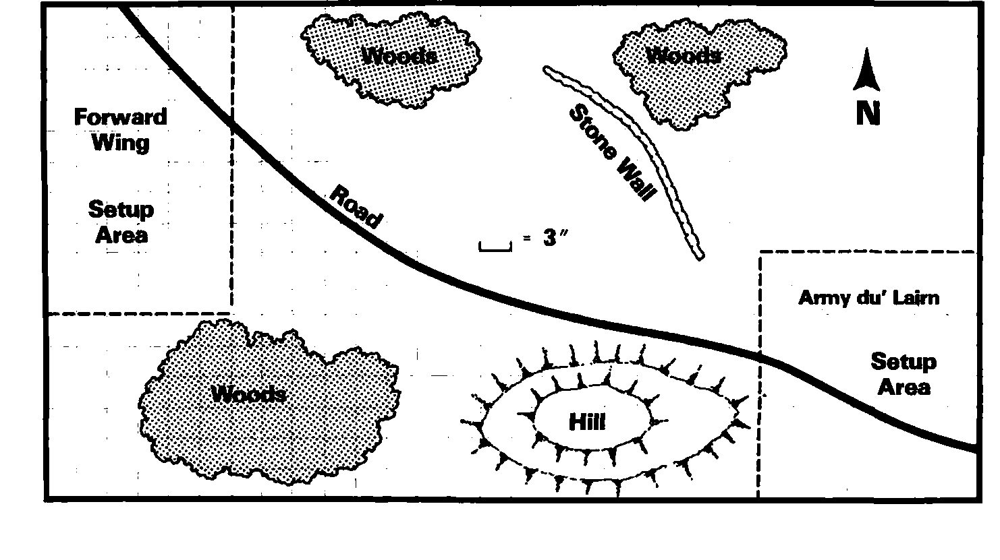

中级战役：莱恩之战 Intermediate Game Scenario: Battle of Lairn
十字路口之战三天后，又一股强大怪物军逼近文明地区：入侵主力的前锋翼军，直指和平小镇莱恩。
矮人再次援助人类。“莱恩军”Army du’ Lairn 由著名的莱恩男爵格兰奇·拉拉克 Baron Grange Rarrack 指挥。侦察发现后方还有另一股怪物；男爵须在两军会合前击溃前锋。精锐精灵援军也许一周后抵达，在此之前只能独力应战。
小镇不利防守，男爵把军队集结在镇外。怪物拖到日落前进攻，让地精避开强烈日照。
按图布地形，双方同时在标明位置部署，可用任何合法队形。桌面不大于四乘八英尺。
最后仍有至少一模型留场者胜，敌方须全灭或溃逃；同归于尽则邪恶方胜。使用基础与中级规则，不用高级规则。

上一节：基础战役：十字路口之战 Basic Game Scenario: Battle at the Crossroads
下一节：高级战役：梅雷尔渡口之战 Advanced Game Scenario: Battle of Merrell’s Crossing